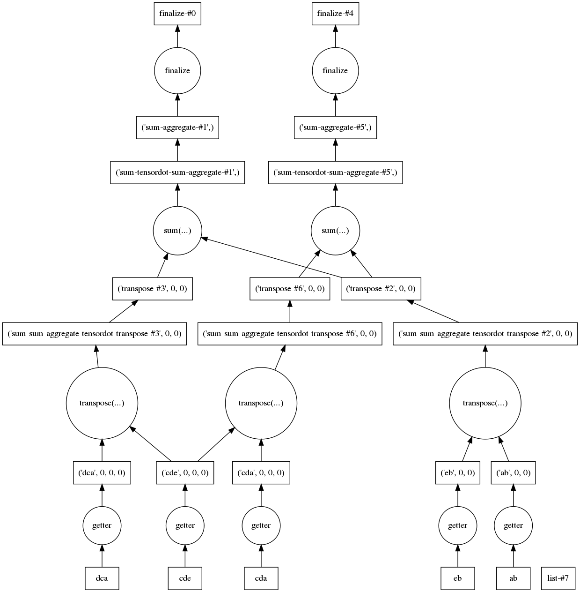

Reusing Intermediaries with Dask
Dask provides a computational framework where arrays and the computations on them are built up into a 'task graph' before computation.
Since :mod:opt_einsum is compatible with dask arrays this means that multiple contractions can be built into the same task graph, which then automatically reuses any shared arrays and contractions.
For example, imagine the two expressions:
contraction1 = 'ab,dca,eb,cde'
contraction2 = 'ab,cda,eb,cde'
sizes = {l: 10 for l in 'abcde'}
The contraction 'ab,eb' is shared between them and could only be done once.
First, let's set up some numpy arrays:
terms1, terms2 = contraction1.split(','), contraction2.split(',')
terms = set((*terms1, *terms2))
terms
#> {'ab', 'cda', 'cde', 'dca', 'eb'}
import numpy as np
np_arrays = {s: np.random.randn(*(sizes[c] for c in s)) for s in terms}
# filter the arrays needed for each expression
np_ops1 = [np_arrays[s] for s in terms1]
np_ops2 = [np_arrays[s] for s in terms2]
Typically we would compute these expressions separately:
oe.contract(contraction1, *np_ops1)
#> array(114.78314052)
oe.contract(contraction2, *np_ops2)
#> array(-75.55902751)
However, if we use dask arrays we can combine the two operations, so let's set those up:
import dask.array as da
da_arrays = {s: da.from_array(np_arrays[s], chunks=1000, name=s) for s in inputs}
da_arrays
#> {'ab': dask.array<ab, shape=(10, 10), dtype=float64, chunksize=(10, 10)>,
#> 'cda': dask.array<cda, shape=(10, 10, 10), dtype=float64, chunksize=(10, 10, 10)>,
#> 'cde': dask.array<cde, shape=(10, 10, 10), dtype=float64, chunksize=(10, 10, 10)>,
#> 'dca': dask.array<dca, shape=(10, 10, 10), dtype=float64, chunksize=(10, 10, 10)>,
#> 'eb': dask.array<eb, shape=(10, 10), dtype=float64, chunksize=(10, 10)>}
da_ops1 = [da_arrays[s] for s in terms1]
da_ops2 = [da_arrays[s] for s in terms2]
Note chunks is a required argument relating to how the arrays are stored (see array-creation).
Now we can perform the contraction:
# these won't be immediately evaluated
dy1 = oe.contract(contraction1, *da_ops1, backend='dask')
dy2 = oe.contract(contraction2, *da_ops2, backend='dask')
# wrap them in delayed to combine them into the same computation
from dask import delayed
dy = delayed([dy1, dy2])
dy
#> Delayed('list-3af82335-b75e-47d6-b800-68490fc865fd')
As suggested by the name Delayed, we have a placeholder for the result
so far. When we want to perform the computation we can call:
dy.compute()
#> [114.78314052155015, -75.55902750513113]
The above matches the canonical numpy result. The computation can even be handled by various schedulers - see scheduling. Finally, to check we are reusing intermediaries, we can view the task graph generated for the computation:
dy.visualize(optimize_graph=True)

Note
For sharing intermediates with other backends see Sharing Intermediates. Dask graphs are particularly useful for reusing intermediates beyond just contractions and can allow additional parallelization.